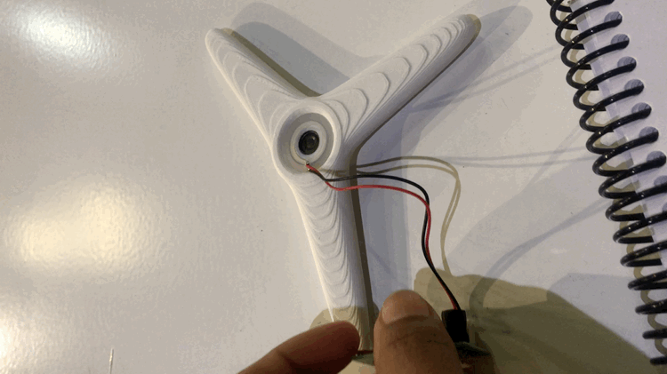
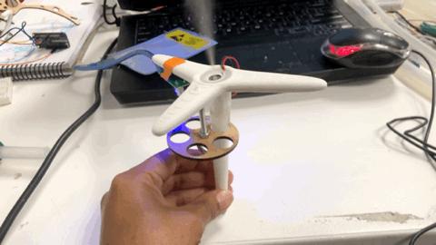
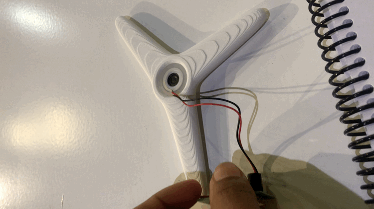
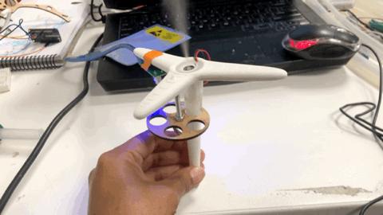
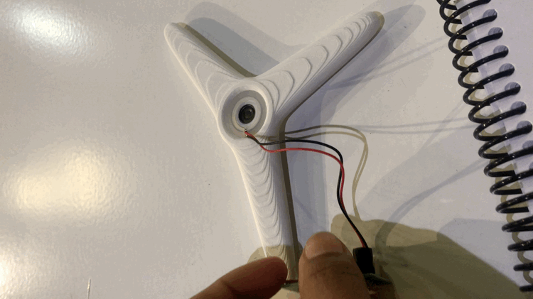
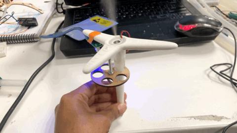

 
 
The project is related to the cognitive processes that we generate when we physically interact with other beings. For instance, the fruits and its aromas, which ones I was interacting before and suggesting other people to reflect on this perceptions.

photo: olaf hajek
The idea is to simulate an experience mentioned before using other techniques, using as a dataset of the new artifact, the experiences of the people that participate before.
Create an artifact that works as a nexus where the unconscious become concious through its mecanism.
Separate what it is possible and try to make it simple.
 
MORE TIME
The mask is going to be heavy because of the tubes, the the frame has to be thicker.
Because of the division of the smell artifact and the sound/button, lets check how the wires are going to overlap themself.
The mist device doesn´t have too much power, test if it is require more devices, or change it for other with more power.

The output of the artifact will be a drawing of the interaction from the right / left movements during the intervention.
WORKING PROGRESS